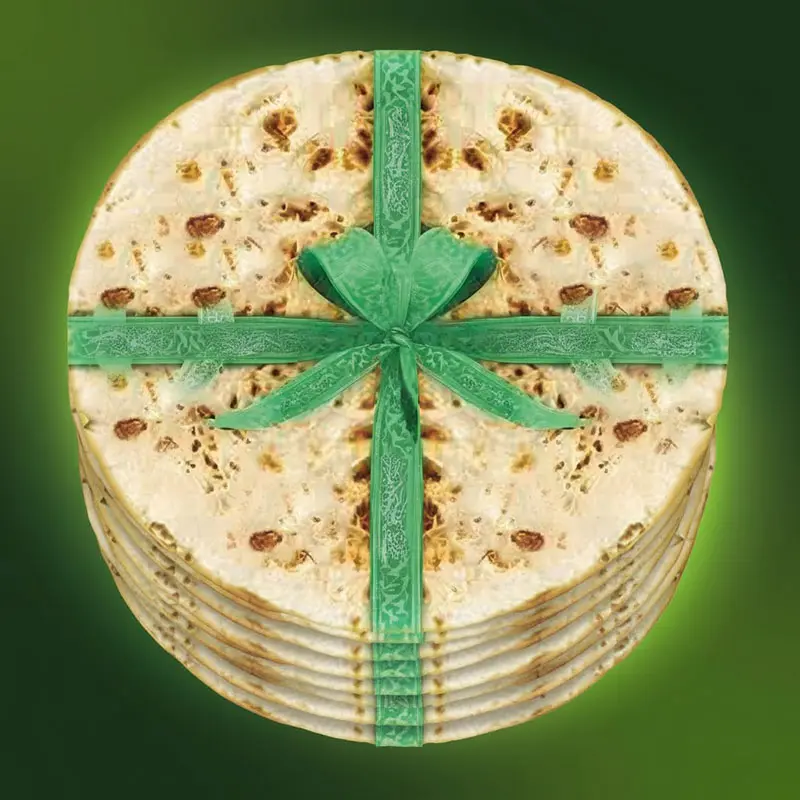
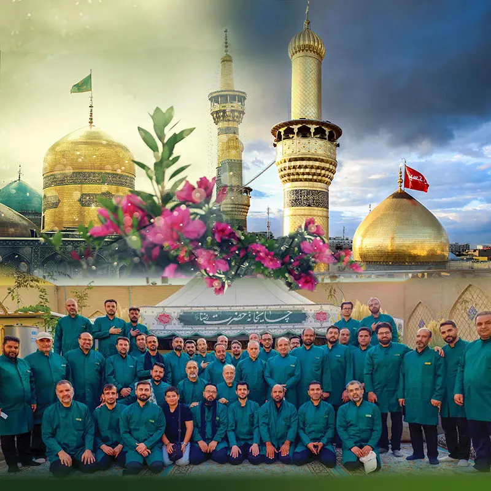
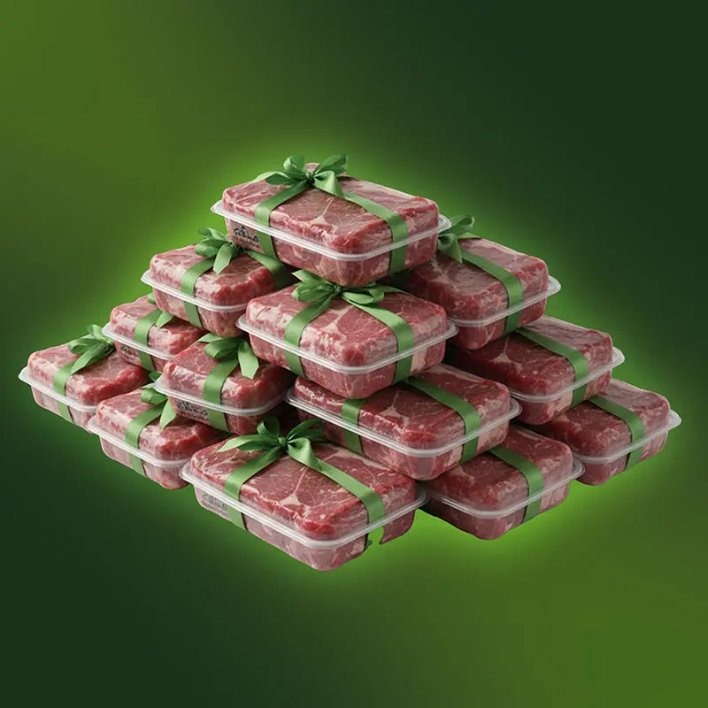
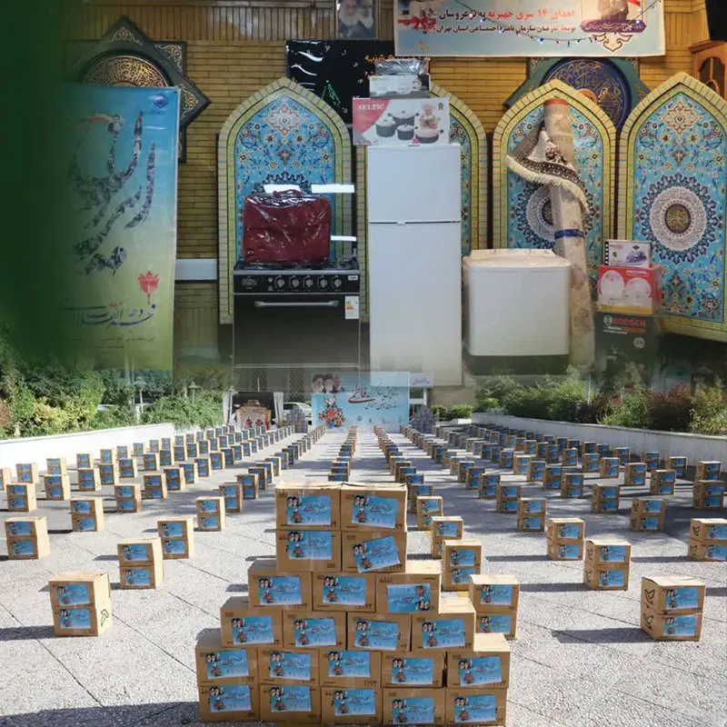

پرش به محتوا
انتخاب نیت خیر — گروه جهادی بسیج شهدای سازمان تأمین اجتماعی
قلک بیمه
نذر درمانی
نذر سازندگی

نذر نان

مواکب شهدای بسیج

نذر قربانی

کمک معیشتی و نذر مؤمنانه
وجوهات شرعی
آزادی زندانیان غیرعمد
نذر عام
Commissioned by the Basij of the Social Security Organization
به سفارش و همت هیأت اندیشهورز بسیج سازمان تأمین اجتماعی